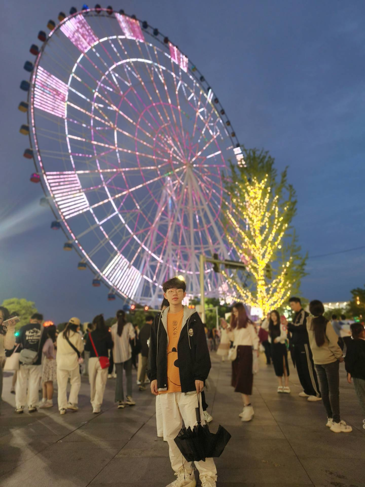
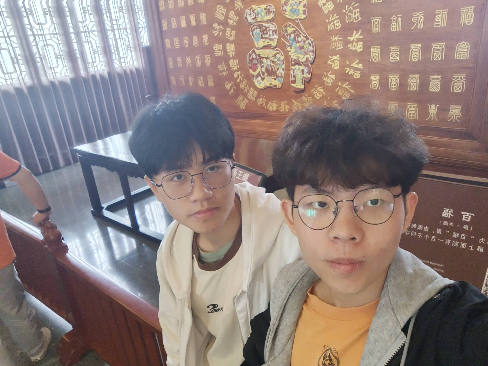
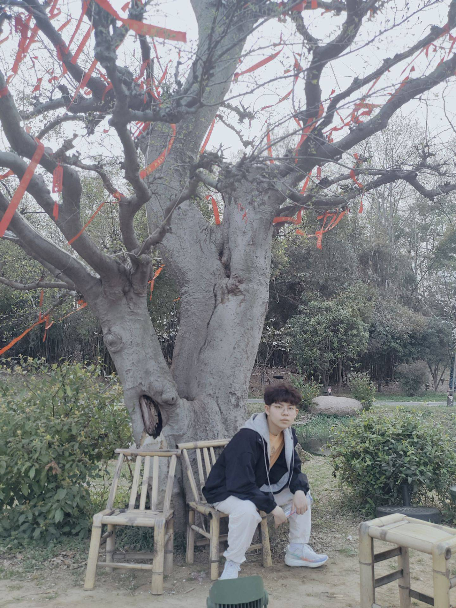
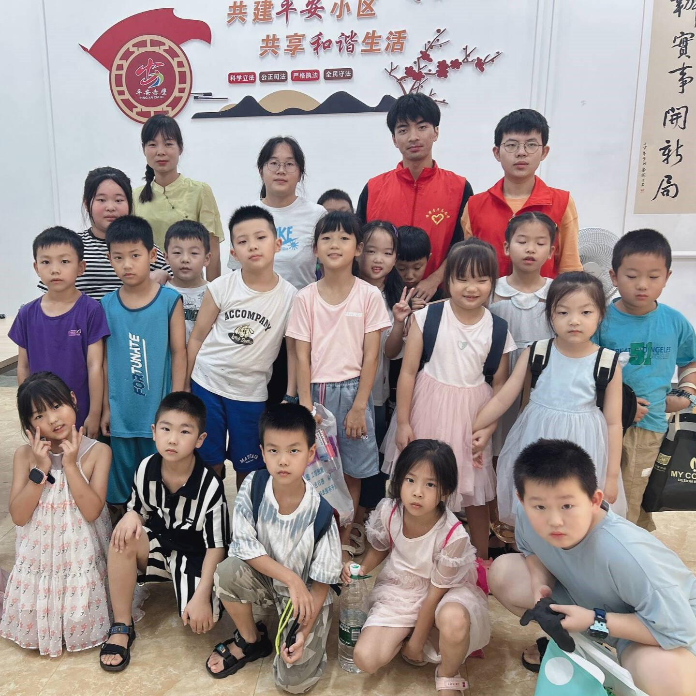

在南昌

南昌的历史可以追溯到公元前202年的西汉时期，当时这里是一个叫做“豫章”的郡。在随后的历史长河中，南昌经历了多次朝代更迭和文化交融，逐渐形成了自己独特的文化特色。 南昌不仅是江西省的省会城市，还因其悠久的历史和丰富的文化传承而闻名遐迩。
滕王阁

滕王阁不仅是一座历史悠久的古建筑，更是一处充满文化底蕴的文化胜地。它的存在不仅见证了中华文明的灿烂历程，也滋养了中华民族的精神食粮。 无论是白天还是夜晚，滕王阁都以其独特的魅力吸引着每一位游客，让人流连忘返。
在武汉东湖樱园

东湖景区内有多个各具特色的景区。听涛景区以休闲为主，游客可以在这里放松心情，享受宁静的湖光山色。 磨山景区则是赏花的最佳地点，每年春季和夏季，这里的樱花和荷花吸引了大量游客前来赏花。 落雁景区以观鸟闻名，游客可以在这里观赏到各种珍稀鸟类。吹笛景区则以游山玩水为主，游客可以在这里体验登山的乐趣。
做志愿活动

志愿服务活动是推动社会文明进步的重要标志。志愿服务不仅是现代社会文明进步的重要体现，也是加强精神文明建设、培育和践行社会主义核心价值观的重要内容。 通过广泛开展志愿服务活动，可以弘扬奉献、友爱、互助、进步的志愿精神，进一步提升社会的整体文明水平